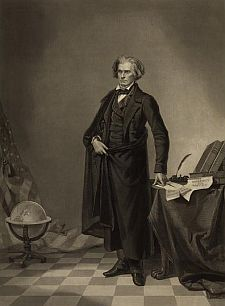
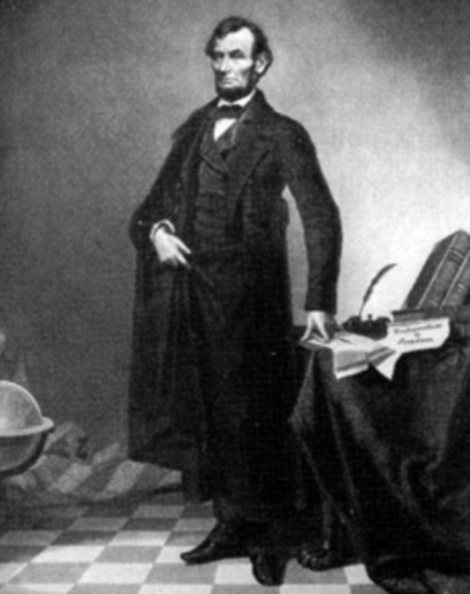
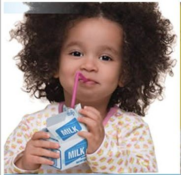
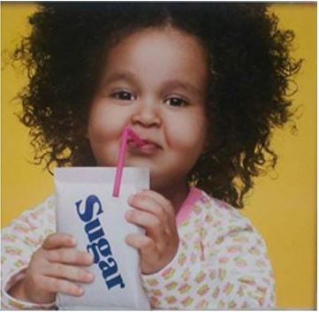

Please cite the following publication if you use FRITH:
K. Asghar, X. Sun, P.L. Rosin, M. Saddique, M. Hussain, Z. Habib,
"Edge-Texture Feature based Image Forgery Detection with Cross-Dataset Evaluation",
Machine Vision and Applications, vol. 30, no. 7-8, pp. 1243-1262, 2019.
Post-print|DOI: 10.1007/s00138-019-01048-2
FRITH is a dataset containing forgeries, in which the images have been tampered by professionals. In total, 255 historic forged images were collected. Along with these, authentic (untampered) versions of 155 forged images were also obtained. The forged images contain a variety of image forgeries such as copy–move and splicing forgeries by transferring objects or regions, forgery by inserting fake objects, manipulation of existing objects, forged images being post-processed using lightening efects and image enhancement/tuning operations.
Some example images are shown below:


two untampered images spliced to make a forgery
a copy move operation applied to the original image


a retouching operation applied to the original image
The images are available for downloading as a zip file here (filesize = 17MB).